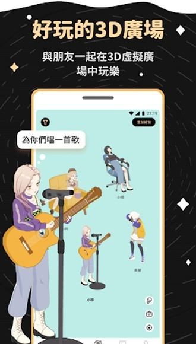
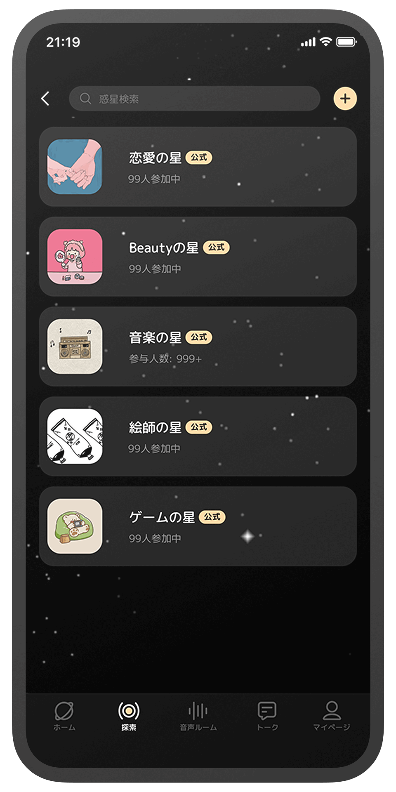

我用过五款匿名社交应用，GRAVITY 凭什么让我留到最后
从 Soul 到各种匿名树洞，再到 GRAVITY——一款把游戏化社交和半封闭社区玩到极致的日系应用，聊聊它为什么在同类里走出了不一样的路。
匿名社交这个赛道从几年前开始就没消停过。从最早的 Soul 到后来各种主打「陌生人交友」「树洞倾诉」的应用，再到大厂下场做的匿名板块，我前后装过删过不下五款。大部分活不过三周——要么时间线被广告和低质内容灌满，要么打着匿名旗号其实社交链条完全是老路子的变种。GRAVITY 是唯一一个我断断续续用了快半年还没删的。
先说结论：如果你在找一款「完全不一样」的匿名社交体验，它值得装来试试；但如果你习惯了微博那种刷不完的信息流、习惯了转发分享的传播快感，它可能会让你觉得「这也太克制了」。
定位：同类里的一股清流
先拉个坐标系。目前市面上的匿名社交大致分三档：第一档是 Soul 这类主打「灵魂交友」的大平台，走量走规模，用户基数大但内容质量波动也大；第二档是各种垂直匿名社区（比如校园、职场、二次元方向），氛围好但池子太小；第三档就是 GRAVITY 这类，把匿名社交和游戏化、虚拟货币、半封闭社区机制捏合在一起的。
GRAVITY官网 的独特之处在于，它从一开始就没打算做一个「下一个微博」或者「下一个 Soul」。它的核心假设是：匿名社交的最大敌人不是孤独，而是噪音。
差异化一：没有转发的时间线，反而是种奢侈
我用过的几乎所有社交应用都在拼命做「转发」「分享」「扩散」——因为传播等于留存，留存等于估值。但 GRAVITY 偏不。
在 GRAVITY 里，一条帖子发出去就是发出去了。没有转发键，没有二次传播，没有「这条火了」的流量加持。你看到的内容主要来自你关注的人、你加入的星球、以及系统推荐的一些新鲜面孔。听起来是不是信息量少了很多？确实，但换来的是一种久违的「时间线控制权」。

对比一下我在 Soul 上的体验：打开就是算法给你灌的热门内容，刷十条里有三条是模板化的「深夜emo」文案，两条是引流广告，剩下五条才可能有一条真正值得读的。关掉推送、拉黑关键词、频繁点「不感兴趣」，折腾半小时时间线还是会慢慢被噪音填满。因为转发机制决定了——只要一个热点话题冒出来，整个池子的内容都会被往那个方向拽。
GRAVITY 没有这个问题。不是说它完全没有热门话题，而是热点不会通过转发机制瞬间占据所有人的时间线。你关注的人发什么，你就看什么；你加入的星球聊什么，你就参与什么。这种「各玩各的、互不干扰」的设计，反而让我在这个应用里花的时间更「沉」——不是被算法拽着刷，而是主动去找感兴趣的内容。
差异化二：游戏化不是噱头，是社交的润滑剂
很多应用也做过「签到领积分」「任务得金币」，但大多是为了促活，积分除了换点虚拟贴纸没别的用。GRAVITY 不一样，它把一整套小游戏厅直接塞进了主流程里，用星粒作为通用货币贯穿整个社区生态。
小游戏的种类不少：匿名猜拳用来破冰、海洋快跑和摩天轮靠运气下注、老虎机攒装扮道具、地球回归玩的是「及时止损」的紧张感。听起来像是不务正业？但实际体验下来，这套东西解决了匿名社交里一个老大难问题——陌生人之间怎么开口。
传统匿名社交里，你看到一个感兴趣的人，只能从「你好」「在吗」开始尬聊，大概率石沉大海。在 GRAVITY 里，你可以先和对方来一局匿名猜拳，赢了还能向输家提一个问题——不是私信，是游戏流程里内置的环节，完全不尴尬。交情涨上去之后系统会帮你们互公开资料、自动加好友，整个过程像玩游戏过关一样自然。
星粒也不是死的。你在小游戏里赢了星粒，可以拿去克兰（团队）里当资金、给喜欢的人送礼物、换装扮道具。免费玩家靠每日登录和低门槛玩法也能攒，氪金玩家充钻石但钻石也只影响高级道具——核心体验基本不靠充值解锁。这点比很多「不充钱连聊天都费劲」的应用厚道多了。
差异化三：星球社区——半封闭的兴趣根据地
GRAVITY 里有个叫「星球」的东西，类似兴趣小组但又不完全一样。每个星球都有自己的准入门槛、主题和氛围。有的星球只要点一下就能进，有的需要申请审核，还有的得攒够一定星粒才能解锁——关于星球的详细分类和准入规则，GRAVITY文档 里整理得比较系统。
这种半封闭的设计带来一个明显的好处：圈子的氛围更纯粹。我加过一个日系音乐相关的星球，里面讨论的内容从 J-Pop 到 Vocaloid 再到 Live 观后感，很少有水贴和广告。对比我在某大厂音乐板块看到的——十条帖子里有五条是「求关注」「互粉」，两条是搬运的抖音短视频片段，真正聊音乐的反而被淹了。
星球的存在也解释了为什么 GRAVITY 不需要转发机制。每个星球内部的讨论本身就是自循环的，好内容自然会被星球里的人反复提及、深入展开，不需要跨圈子传播来证明价值。

说了这么多好的，也说说它的取舍
公平起见，得讲讲 GRAVITY 为这些优势付出的代价。
上手门槛比同类高。 从官方下载装完第一次打开 GRAVITY，你会看到 3D 广场、语音房、星球、小游戏、星粒钻石两套货币……东西确实多，但没人教你先点哪个。不像 Soul 打开就是「测试匹配」直接上手。我花了大概两天才搞清楚各个入口是干嘛的，一周后才找到自己常待的星球和常用的玩法。对了，界面是日文为主（虽然有中文选项但翻译不算完全），如果完全不熟悉日系应用的操作逻辑，可能会有点懵。
社区生态偏日系。 这是一把双刃剑。好处是社区氛围确实友好，我几乎没遇到过其他匿名应用里常见的骚扰、广告引流、恶意抬杠。坏处是内容有文化隔阂——梗你可能接不上，一些活动的规则和节奏也是日本用户习惯的那一套。如果你主要想找国内同好，可能得花点时间筛星球。
没有转发 = 没有传播性。 如果你习惯了在社交平台上分享有趣的东西给朋友、或者期待自己发的内容能「火」，GRAVITY 会让你失望。你的帖子只能被关注你的人看到，或者被星球里的人讨论——永远不会出现在陌生人的首页推荐流里。这一点是设计选择，不是 bug，但得提前有心理预期。
小游戏有风险。 星粒下注类玩法的数学期望对玩家是不利的，玩着玩着上头了输一堆星粒的情况确实存在。虽然星粒本身是游戏内货币、不涉及真金白银的赌博，但如果你本身容易对这类机制上瘾，建议从一开始就给自己设好上限。
最后：什么样的人选它
选 GRAVITY 之前，先问自己两个问题：
第一，你要的是「找人聊天」还是「找一个舒服的地方待着」？前者你可能还是去 Soul 或者各种同城交友应用更高效；后者——想要一个不会被噪音打扰、可以慢慢逛、可以偶尔和陌生人玩两句小游戏的地方——GRAVITY 目前是我用过最贴合的。
第二，你能不能接受「不火」？在 GRAVITY 里，你发一条帖子可能只有十来个人看到，但这十来个人里有三个会认真回复你、和你聊上半小时。这就是它的节奏——小圈子、慢社交、重质量不重量。
如果你能接受这个节奏，GRAVITY 值得一试。
这套资料在三个仓库都能拿到：GitHub、Gitee 和 GitCode，搜索「手机版 / GRAVITY」就能找到完整的文档目录。